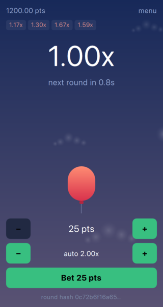

This chapter gets a window on screen and the multiplier curve behind it. By the end you will have an empty but running Felgo game, a C++ class that turns a duration into a multiplier, and that class talking to QML.
Create a new Felgo project from Qt Creator's wizard, or start from an empty directory with a CMakeLists.txt. The Felgo-specific part of it is short:
find_package(Felgo REQUIRED) set(PRODUCT_IDENTIFIER "com.merdak.ascent") set(PRODUCT_VERSION_NAME "1.0.0") set(PRODUCT_VERSION_CODE 1) set(PRODUCT_STAGE "test") set(PRODUCT_LICENSE_KEY "") set(FELGO_PLUGINS )
find_package(Felgo) brings in everything Felgo ships - the QML types, the plugins, the deployment helpers. The product variables underneath it are what end up in the app bundle: the identifier that identifies your app to the app stores, the version the store shows, and the license key. Leave the key empty while you build. It only removes the Felgo splash screen, and the splash screen turns out to be something we have to handle anyway.
PRODUCT_STAGE stays at test until the very end, when switching it to publish is part of preparing a release build.
A Felgo game starts with a GameWindow holding one or more scenes:
GameWindow { id: root // Desktop window size. On mobile the scenes scale to the device screen // instead. screenWidth: 480 screenHeight: 720 MenuScene { id: menuScene onPlayRequested: root.state = "game" } GameScene { id: gameScene onBackRequested: root.state = "menu" } GameAudio { id: gameAudio } SavedGame { id: savedGame } // One scene visible at a time, and the window decides which. A scene asks to // be left and does not name its successor, so the same scene can be reached // from anywhere without knowing what came before it. // // The game opens on the game: rounds are already cycling, and a title screen // between the player and the next one is a door with nothing behind it. state: "game" states: [ State { name: "menu" PropertyChanges { menuScene.opacity: 1 } PropertyChanges { root.activeScene: menuScene } }, State { name: "game" PropertyChanges { gameScene.opacity: 1 } PropertyChanges { root.activeScene: gameScene } } ] // Not Component.onCompleted: on a free license the splash screen sits on top // for a few seconds, and rounds cycling behind it would mean the player walks // in on a bet they never had the chance to place. onSplashScreenFinished: Rounds.start() }
GameWindow is the application window, and screenWidth and screenHeight only decide how big it opens on a desktop - on a phone it fills the screen instead.
Scene is where resolution independence happens. You give it a logical size once and then position everything inside it in those coordinates forever; Felgo scales the scene to whatever display it lands on and letterboxes the remainder. Here that size is given once, in a SceneBase every scene inherits, rather than repeated per scene:
Scene {
id: root
width: 320
height: 600
opacity: 0
visible: opacity > 0
enabled: visible
}
Portrait, because the balloon rises - and it is the right shape for a phone. Taller than the window's own ratio on purpose: the extra logical height is room the layout can hand to the balloon, and it costs nothing, because the scene is scaled rather than cropped.

The last two lines of that base are the ones worth copying. A hidden scene is invisible, and in Qt an invisible item is still enabled - its buttons keep taking taps. Tying enabled to visible is what stops the menu being pressable through the game.
The sky is anchored to fullWindowAnchorItem rather than to the scene. The scene is the play area, but the window may be taller or wider than it, and without that anchor the letterbox bars would show through as black.
That anchor is also the whole of this game's answer to notches and home indicators. Scene fits itself into the safe area of the screen by default, so anything laid out in scene coordinates is already clear of them, and fullWindowAnchorItem is the way to opt back out. Two things opt out here: the sky, and the dim behind the menu's panels - a dim that stopped at the scene edge would leave lit bars of sky around a panel meant to be the only thing on screen.
Which scene is on screen is one property on the window:
// One scene visible at a time, and the window decides which. A scene asks to // be left and does not name its successor, so the same scene can be reached // from anywhere without knowing what came before it. // // The game opens on the game: rounds are already cycling, and a title screen // between the player and the next one is a door with nothing behind it. state: "game" states: [ State { name: "menu" PropertyChanges { menuScene.opacity: 1 } PropertyChanges { root.activeScene: menuScene } }, State { name: "game" PropertyChanges { gameScene.opacity: 1 } PropertyChanges { root.activeScene: gameScene } } ]
A state names a scene and makes it visible; the state machine reverses the change on the way out, so nothing has to remember to hide the scene it left. activeScene moves with it, which is what gives the visible scene the key focus.
Scenes do not name their successor. Each one emits backRequested and the window decides where that goes, so a scene can be opened from anywhere without knowing what it will be returning to.
The game opens on the game rather than on the menu. Rounds cycle whether anyone is watching, so a title screen between the player and the next round would be a door with nothing behind it.
Now the first piece of actual game logic. A crash game's multiplier grows exponentially: slowly at the start, then faster and faster. That shape is what makes waiting stop feeling free at some point, which is the entire tension of the game.
qreal CrashCurve::multiplierAt(qint64 elapsedMs) const { // A round can only pay out from 1.00x upwards, so time before the start is // not negative winnings - it is simply the start. if (elapsedMs <= 0) return 1.0; return qExp(m_growthRate * (elapsedMs / 1000.0)); }
Two things are worth pointing out. The first is what the function does not do: it holds no state about the round. It does not know whether a round is running, when it started, or whether anyone has bet. You give it a duration and it gives you a multiplier. That makes it trivial to unit test - no clock to fake, no round to set up - and safe to call from a paint loop.
The second is the guard on negative time. Clocks hand you odd deltas around a round boundary, and a negative one should not mean negative winnings. A round pays from 1.00x upwards, so anything before the start simply is the start.
The growth rate is a property rather than a constant, so it can be tuned from QML while the game runs. At the default of 0.1 per second the multiplier doubles roughly every seven seconds, which is a pace players can feel.
The curve is a QObject with a Q_PROPERTY and a Q_INVOKABLE method, which is all QML needs. It just has to be told the type exists:
void registerCoreTypes(Wallet *wallet, RoundSource *rounds, PlayerStats *stats, RoundHistory *history, ProvablyFair *fair) { const char *uri = "Ascent"; // There is exactly one wallet and one stream of rounds in a running game, so // QML is handed those two rather than the means to build its own. qmlRegisterSingletonInstance(uri, 1, 0, "PlayerWallet", wallet); qmlRegisterSingletonInstance(uri, 1, 0, "Rounds", rounds); qmlRegisterSingletonInstance(uri, 1, 0, "PlayerStats", stats); qmlRegisterSingletonInstance(uri, 1, 0, "RecentRounds", history); // The proof is checked with the same code that made it, which is the // point: the player runs the game's own arithmetic against its own claim. qmlRegisterSingletonInstance(uri, 1, 0, "Fairness", fair); // Not creatable either, but the UI needs the state names to know whether it // is drawing a betting window, a climbing multiplier or a wreck. qmlRegisterUncreatableType<RoundEngine>(uri, 1, 0, "RoundEngine", QStringLiteral("RoundEngine belongs to the round " "source, not to QML")); }
Notice that QML is not handed the means to build any of this. A running game has exactly one wallet and one stream of rounds, so those two objects are registered as singletons: QML can read PlayerWallet.balance and call Rounds.requestCashOut(), but it cannot invent a second wallet, and a second wallet is precisely the kind of bug that only shows up once someone has real points in it.
The round engine is registered too, as an uncreatable type. That sounds pointless until you need RoundEngine.Running in a binding - registering it is what makes the state names exist in QML, without offering to instantiate an engine that would have nothing to run.
Build and run, and the window comes up dark and empty. It is not a game yet - nothing moves and there is nothing to press - but the two halves of the app are connected, and every chapter from here on adds to a running program.